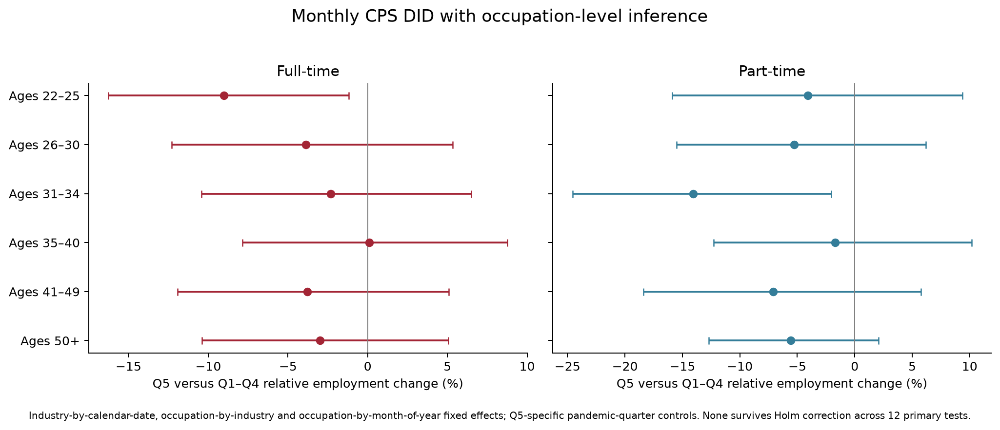
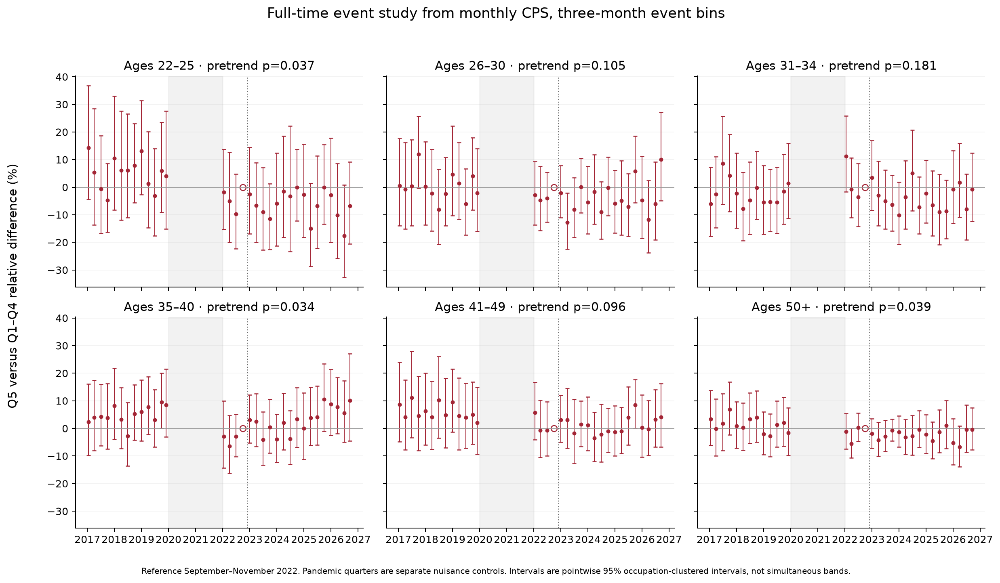
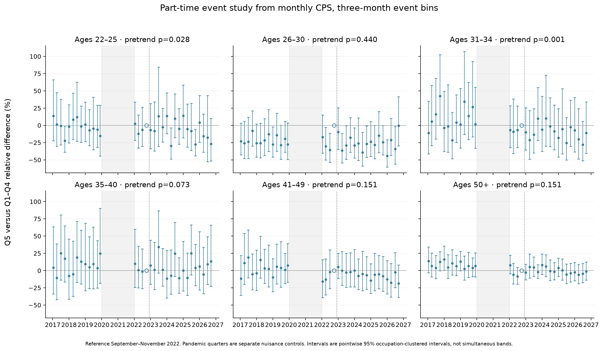
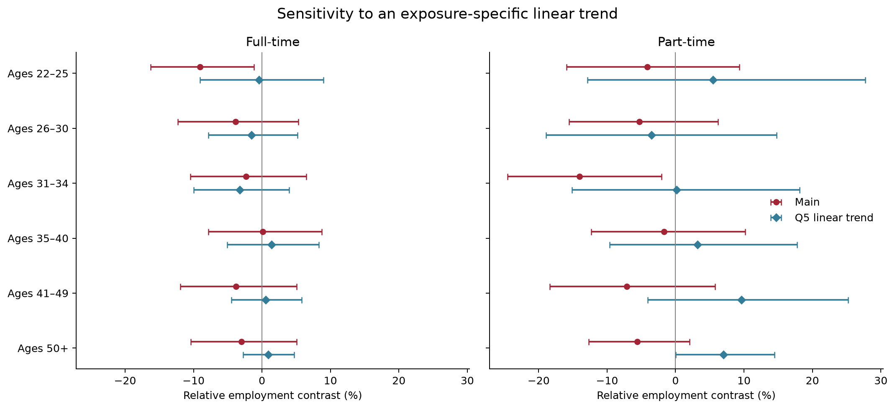
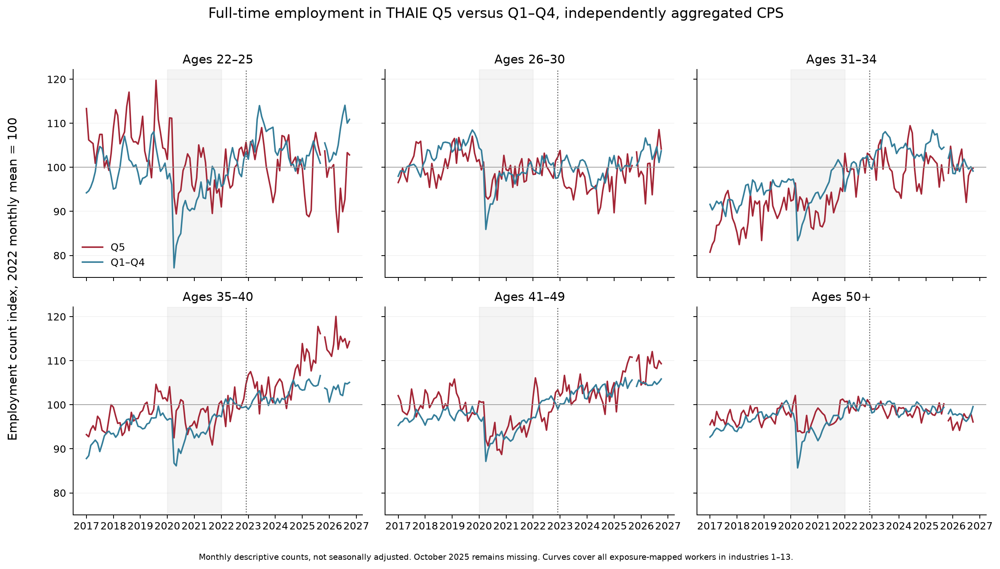
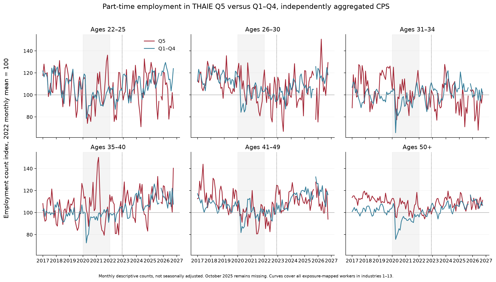
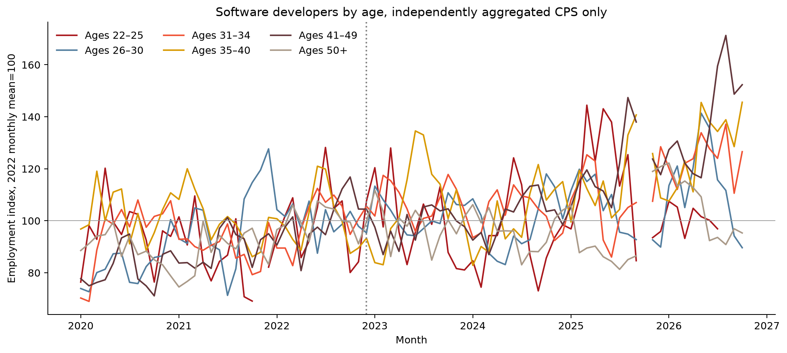

Introduction
Generative AI could change both the number of entry opportunities and the quality of jobs offered. Employment stocks alone cannot distinguish reduced hiring from separations, aging, occupational reallocation, or individual moves into part-time and contingent arrangements. This study combines those outcomes only where their data and denominators support comparison.
We independently reconstruct monthly employment from official Basic Monthly CPS microdata and assign occupations using our own THAIE methodology. Published payroll indices are not analysis inputs, calibration targets, or substitutes for CPS observations.
Related evidence and alternative explanations
Canaries in the Coal Mine documents exposed early-career employment weakness. Generative AI at Work demonstrates productivity gains in a specific firm setting. Adoption studies and broader labor-market assessments do not uniformly find displacement. Pre-existing trends, pandemic recovery, remote work, monetary conditions, and firm selection remain competing explanations.
Full verified literature review · Literature matrix · Bibliography. Version-specific verification limits remain in the evidence register.
Methods
Population and age groups. CPS estimates use employed civilian noninstitutional people aged 16 and older in all 50 states and DC. The six focal groups are 22–25, 26–30, 31–34, 35–40, 41–49, and 50+. The all-worker series also includes ages 16–21. Employed people include those at work and those temporarily absent. Composite final weights produce employment counts, not employment-to-population rates. Full-time and part-time use the established CPS labor-force classification. Recorded sex is reported as women and men; it is not a measure of gender identity.
Exposure. The primary analysis uses our THAIE occupational quintiles, frozen using the existing 2019 employment-based classification. Quintiles are not recalculated within age, sex, or employment-status groups. Scores are retrospective task-based measures, not observed AI adoption. Unmapped occupations remain unassigned, rather than being placed in Q1–Q4.
Coverage and support. Descriptive CPS curves span January 2020–October 2026, with 81 available months. The analysis extends the monthly pre-period to January 2017. October 2025 remains missing. Curves are not seasonally adjusted or smoothed. Displayed cells require at least 30 employed observations and at least 120 person-month observations in the 2022 baseline. The regressions use supported aggregate cells including zero counts and do not select cells based on statistical significance. Sampling uncertainty, rotation overlap, population controls, and occupational crosswalks remain relevant.
Within-occupation comparisons. Software developers are Census occupation 1021, corresponding to SOC 15-1252, and belong to THAIE Q4 in our mapping. A fixed occupation-level score cannot identify five exposure strata within a single occupation. We show age-specific trends for the fixed occupation and compare THAIE groups within the broader computer and mathematical family where detailed occupations differ.
Monthly DID, event-study design, and identifying limits
The main estimation sample spans January 2017–October 2026, with 117 available months. Post begins in December 2022. Earlier occupation codes are probabilistically bridged to the common classification. The 2020-start sensitivity avoids that bridge but has a short, pandemic-dominated pre-period.
Age-specific Poisson quasi-likelihood models use occupation×industry, occupation×month-of-year, and industry×calendar-date fixed effects. They permit occupation-specific seasonality and absorb industry-wide monthly shocks. Separate Q5 interactions cover each pandemic quarter in 2020–2021. Q5 membership is frozen under our own THAIE method.
The main full-time and part-time estimates use common supported rows. This retains 89.6%–98.8% of covered full-time counts and 99.6%–99.9% of part-time counts, depending on age. Full-time-only support checks retain all covered full-time counts. Zero counts within supported cells remain in the regressions; the descriptive chart threshold is not imposed on estimation.
Standard errors cluster by detailed occupation, the exposure-assignment unit, with an occupation-and-date two-way sensitivity. These are working score-sandwich intervals, not official CPS design-based intervals. The 12 primary contrasts receive Holm correction. Quarterly-binned event interactions use monthly observations, reference September–November 2022, and separate pandemic nuisance terms. Event intervals are pointwise, not simultaneous.
Stable industry allocation, recurring seasonality, and common industry recovery are controlled under the specified model. Occupation-specific shocks, retrospective exposure measurement, historical crosswalk error, selection into support, rotation overlap, and unobserved adoption remain limitations. Availability of a tool is not randomly assigned adoption.
Results
Open a result below. The monthly explorer uses only our CPS reconstruction and THAIE classification, with all six age groups, occupation selection, and separate recorded-sex panels. Descriptive curves are not causal estimates.
New CPS-only monthly DID and event studies across six age groups
None of the 12 primary age-by-employment-type comparisons survives Holm correction. The nominal signals in the 2017-start model are lower full-time employment among ages 22–25 and lower part-time employment among ages 31–34. None of the 12 comparisons in the original 2020-start monthly window is nominally significant at .05. These are relative count contrasts, not employment-rate percentage points or individual transitions.
| Age | Full-time %, 95% CI | Raw p | Holm p | Part-time %, 95% CI | Raw p | Holm p |
|---|---|---|---|---|---|---|
| 22–25 | -9.03% [-16.26, -1.17] | 0.025 | 0.279 | -4.10% [-15.89, +9.35] | 0.531 | 1.000 |
| 26–30 | -3.88% [-12.28, +5.32] | 0.395 | 1.000 | -5.29% [-15.52, +6.19] | 0.351 | 1.000 |
| 31–34 | -2.33% [-10.43, +6.50] | 0.593 | 1.000 | -14.04% [-24.56, -2.05] | 0.023 | 0.279 |
| 35–40 | +0.11% [-7.86, +8.77] | 0.979 | 1.000 | -1.70% [-12.29, +10.16] | 0.767 | 1.000 |
| 41–49 | -3.80% [-11.93, +5.08] | 0.389 | 1.000 | -7.09% [-18.39, +5.77] | 0.265 | 1.000 |
| 50+ | -2.98% [-10.40, +5.05] | 0.455 | 1.000 | -5.59% [-12.68, +2.08] | 0.149 | 1.000 |
Original 2020-start sample, all six age groups
| Age | FT %, 95% CI | Raw p | PT %, 95% CI | Raw p |
|---|---|---|---|---|
| 22–25 | -2.38% [-10.25, +6.17] | 0.572 | -3.01% [-18.10, +14.85] | 0.722 |
| 26–30 | -1.72% [-7.48, +4.39] | 0.572 | -4.65% [-17.30, +9.93] | 0.511 |
| 31–34 | -4.38% [-10.77, +2.47] | 0.204 | -4.64% [-18.74, +11.92] | 0.560 |
| 35–40 | +6.48% [-0.54, +13.99] | 0.071 | +2.72% [-9.30, +16.33] | 0.672 |
| 41–49 | -0.02% [-5.48, +5.77] | 0.995 | +0.30% [-13.76, +16.64] | 0.969 |
| 50+ | -0.71% [-5.17, +3.97] | 0.763 | +2.29% [-4.10, +9.10] | 0.491 |
For ages 22–25, the full-time estimate is −9.03%, with nominal p=.025 and Holm p=.279. A Q5-specific linear trend changes it to -0.44%, p=0.924. Restricting the window to January 2020 onward gives −2.38% [−10.25, +6.17], p=.572, for young full-time employment. The longer pre-period and historical coding bridge therefore matter. The full-time-only-support sensitivity gives −8.12%, nominal p=.040; it does not resolve the pretrend or multiplicity concerns. The industry controls here concern actual industry cells; Q5 is an occupational THAIE group, not a high-industry grouping.


Pre-period differences and event-study uncertainty
The ages 22–25 full-time joint pretrend test has nominal p≈.037. The ages 31–34 part-time pretrend test is more strongly inconsistent with flat pre-period coefficients. Failure to reject in other groups is not evidence that parallel trends hold.
| Age | FT raw p | PT raw p | FT Holm p | PT Holm p |
|---|---|---|---|---|
| 22–25 | 0.037 | 0.028 | 0.343 | 0.305 |
| 26–30 | 0.105 | 0.440 | 0.576 | 0.603 |
| 31–34 | 0.181 | 0.001 | 0.603 | 0.015 |
| 35–40 | 0.034 | 0.073 | 0.343 | 0.514 |
| 41–49 | 0.096 | 0.151 | 0.576 | 0.603 |
| 50+ | 0.039 | 0.151 | 0.343 | 0.603 |






An absolute part-time increase is not a relative shift into part-time work
Between January–September 2022 and the same months in 2026, young Q5 full-time employment decreased 3.34%, while Q1–Q4 increased 6.91%. Young Q5 part-time employment increased 6.53%, while Q1–Q4 increased 20.11%. Thus, Q5 part-time headcount can rise without an estimated relative part-time increase. Repeated employment stocks do not show that the same people moved into part-time work.
Age differences require direct tests
The global equal-age-effects tests give p=.159 for full-time and p=.588 for part-time employment. No youngest-versus-older contrast or full-time-versus-part-time contrast survives its family correction. The current results do not establish a cutoff at age 25, 30, or 34, or an AI-induced benefit for older workers.
Full English scientific report · Primary estimates and diagnostics · Complete sensitivity grid · Pretrend tests · Event coefficients and bin coverage
Earlier annual analyses and different estimands
Earlier regional rate models, occupational contrasts, and industry young/older ratios estimate different quantities under different time windows and samples. They are retained in the prior snapshot and audit, not treated as replications of this monthly specification.
Monthly employment indices by exposure, age, occupation, and sex
All-worker exposure comparison
Exposure comparison within a fixed age group
Age comparison within a fixed occupation
Exposure within the broader occupational family
Exposure and sex within the selected age group
These two panels cover all exposure-mapped occupations, not only the occupation selected above. Women and men share the same vertical scale and use their own 2022 baselines.
Hover over a point or focus it with the keyboard to inspect the index. Gaps are not zero employment. Software-developer age-by-sex cells are often too small for monthly display. No external payroll data are loaded.
Monthly Q5 versus Q1–Q4 full-time and part-time trends






Job quality, worker transitions, and hiring opportunities
Full-time and part-time counts describe hours categories, not contract permanence. Involuntary part-time status, realized earnings, and actual individual transitions are separate outcomes. The current regional job-quality estimates and attrition-adjusted youth transition contrasts do not establish AI-induced downgrading. SIPP offers longer histories but the high-exposure young sample is small. An absent significant transition is not proof that adjustment never occurs.
Archived job postings supply selected employer snapshots rather than a complete representative hiring panel. Missing archives are not zero vacancies. Posted pay is not realized pay, salary disclosure can respond to transparency laws, and few employers cannot support broad causal claims about hiring or job quality.
Linked-CPS and SIPP methods and results · Prior job-quality results · New monthly occupation-cell support audit
Productivity and the proposed employment tradeoff
Across 11 matched industries, one SD of frozen THAIE is associated with +0.89 percentage points of annualized labor-productivity growth during 2022–2025, with a 95% interval of −0.95 to +2.72 and p=.303. The positive coefficient is not statistically established. The post-2022 growth-acceleration panel is also inconclusive. Normalized productivity index levels do not measure comparable absolute industry productivity.

The available data do not establish that AI productivity gains caused weaker youth employment. The exploratory joint directional test has p=.152. BLS private-business productivity coverage also differs from CPS all-worker employment coverage.
Discussion
What can be maintained. The raw CPS counts show relative early-career full-time weakness, but the monthly occupation-clustered DID signals are not robust to primary multiplicity correction. Trend sensitivity and pre-period differences prevent AI-causal interpretation. The age pattern cannot establish an affected-age boundary.
What remains unproven. These data do not establish an AI-induced relative part-time increase, hiring suppression as the mechanism, permanent-to-contract transitions, individual employment downgrading, or a causal advantage for older workers. Non-significance also does not prove that effects are zero. Broader questions about offered-job quality and observed worker adaptation require separate linked evidence.
Policy implications. Monitor entry hiring, retention, hours, training, and benefits together. Evaluate paid entry pathways and worker adaptation prospectively. A stronger design needs actual employer AI adoption, complete posting denominators, linked hires and separations, origin-job exposure, and comparable output and hours. The current estimates do not justify a quantified aggregate loss or benefit.
Long pre-periods, pandemic and industrial shocks, seasonality, changing population controls, survey nonresponse, occupational mix, and measurement error require continued examination. See Roth on pretesting and Rambachan and Roth on deviations from parallel trends. The trend sensitivity here is not a formal HonestDiD analysis.
Data and code
New CPS-only monthly regression materials
- Scientific report and interpretation
- Compressed aggregate panel, code, results, and source manifest
- Monthly Q5 and Q1–Q4 employment counts and indices
- Age-specific estimation support
- Full-time-only-support sensitivity
- Occupation-and-date clustering sensitivity
- Direct youngest-versus-older tests
- Global age heterogeneity tests
- Direct full-time/part-time contrasts
- Independent explicit-dummy model validation
- Our THAIE input hashes and software versions
- Final model and publication checks
New monthly data
All inputs were obtained through free public sources. Existing detailed materials are retained in the archive, while overlapping narratives have been condensed on this page. No person-level CPS or SIPP records are published.